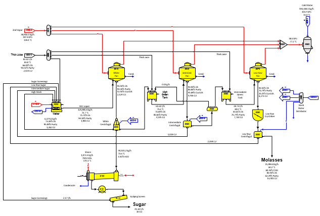
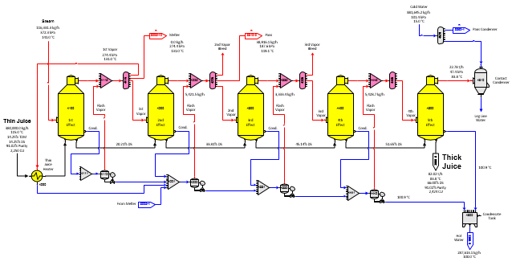
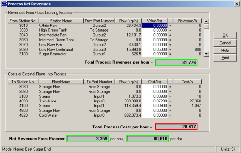
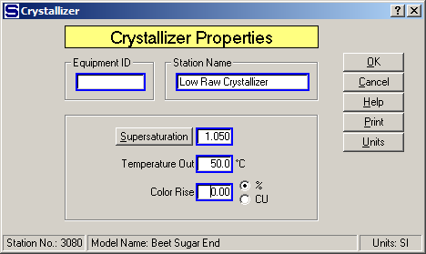

The flow diagram for a beet factory sugar end with a multiple-effect evaporator is a two page model. The first page covers crystallization and is shown in the diagram below.

Page 1
The second page covers 5-effect evaporation with condensate flashing and is shown on page 2.

Page 2
External flows into the model are: (1) thin juice to a juice heater on 1st vapor, (2) steam to the 1st effect, (3) cold water to the condensers, and (4) steam to the sugar dryer/granulator. Output flows from the model are: (1) sugar from the scalping screen, (2) molasses from the low raw centrifugal, (3) 2nd and 3rd bleed vapor, (4) hot condensate water, and (5) warm leg line water from the condensers.
This is a three boiling model with only one melter. Bleed vapors from the multiple-effect are used to provide all of the steam for the pans, melter and thin juice heater in the process. Wash water for the centrifugals is provided by condensates from the evaporator bodies. Steam of higher pressure than the exhaust steam pressure is used for the sugar dryer.
Heat transfer coefficients are used for each effect in the evaporator; so as changes are made to the model, the vapor temperatures and pressures for each effect's vapor will change as the vapor loads change. Also, note that vapor from each effect contains a small amount of entrained liquid with sucrose. The entrainment is higher in the first two effects where the evaporation rate is highest and diminishes to smaller amounts for the last two effects. Because of the entrainment, condensates from the 2nd, 3rd and 4th effects contain a small amount of sucrose. Some of this sucrose is recovered when the condensates are used for centrifugal wash water and the remainder is lost to the leg line water from the condensers (station nos. 3360 and 4610), condensates leaving each pan and hot water out of the model (from distributor station no. 3300).
Condensate from the 1st effect (station no. 4100) is flashed to 1st vapor and then sent to a receiver to be combined with other condensates to be flashed to 2nd, 3rd and 4th vapor.

The Net Process Revenues for the model are shown in the above window. Value and Cost figures for the entries in each section can be edited directly from this window by clicking the left mouse button on the value to be changed. As shown for the value and cost entries given, the Net Process Revenues for the model are 80,616 currency units per day. Other windows in Sugars can be used to review all of the input data used for this model and the balance results.
Changes can be made to the input data and comparisons can be made between the output results to evaluate the impact of each change. Also, the effect on the process from changes in the operating characteristics of a station can be evaluated quickly to determine their value to the performance of the process; for example, improving the performance of the crystallizer will cause a reduction in the massecuite temperature and sucrose supersaturation. Entering the new improved values can help to decide whether additional crystallizer capacity and cooling are worth the investment expense.
For example, the performance of crystallizer station no. 3080 on low raw massecuite can be changed to simulate more crystallizer capacity with better cooling. More crystallizer capacity will result in the massecuite having more time to achieve equilibrium in the crystallizers that will give a lower supersaturation of the massecuite as it leaves the crystallizer. More cooling in the crystallizer will result in a lower temperature of the massecuite as it leaves the crystallizer. Thus, simply lowering the supersaturation coefficient and temperature values would simulate a change in performance of the crystallizer station.
The window below shows the input parameter's window for the crystallizer before any changes are made (Supersaturation Coefficient = 1.100 and Temperature = 54.0°C).
And, the window below shows the input parameter's window after changes are made to the Supersaturation Coefficient (=1.050) and Temperature (=50.0°C) values.

The resulting change in process revenues is shown on the window below.
No change is made in the Color Rise (%) parameter, and color rise in the massecuite (input value is 0.0), as it passes through the crystallizer, is not considered in this example; however, increasing the holding time of massecuite in the crystallizer may affect the massecuite color. This could be considered by entering a different value than 0.00 for the Color Rise (%). As shown on the above window, the net process revenues increase to 89,208 currency units when the change is made. This is an increase in revenues of 8,592 currency units per day, or a 10.66% increase in revenues. This increase in revenues can be used to evaluate the economics for making an investment in additional crystallizer capacity and cooling. Other detailed changes in the model can be evaluated by printing out the results from both before and after the changes are made, displaying data on the drawing and noting the changes, or by reviewing the pertinent flow streams using the properties windows.
The results of each process modification may depend on the operating conditions and the characteristics of each station in the model; that is, the conclusions reached for one process model may not apply to another and checking them for each case is best.